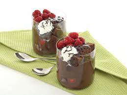

...Çikolata Küpleri...
Çikolatalı ve şam fıstıklı tadımlık lezzetler...Yalnızca 4 malzeme ile hazırlanan çikolata küpleri,renkli kağıtlarda veya kürdan batırılarak servis edilir.Özellikle kalabalık sofralarda yer verilen çikolata küpleri,doğum günü gibi özel etkinliklerde de sunulabilir.
Tarif: Elif İlkay Özkan
